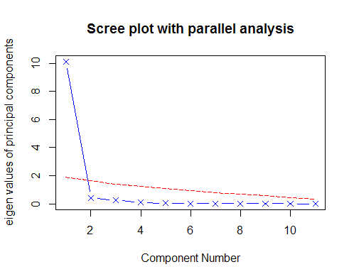

主成分分析（PCA）
主成分分析（PCA）是一种数据降维技巧，它能将大量相关变量转化为一组很少的不相关变 量，这些无关变量称为主成分。
PCA和EFA最常见的步骤如下：
-
数据预处理。可以输入原始数据矩阵或者相关系数矩阵到
principal()和fa()函数中。输入初始数据，相关系数矩阵将会被自动计算，需要确保数据中没有缺失值。 - 选择因子模型。判断PCA(数据降维)还是EFA(发现潜在结构)更符合你的研究目的。
PCA的目标是用一组较少的不相关变量代替大量相关变量，同时尽可能保留初始变量的信息。如第一主成分为：
PC1 = a1X1+a2X2+…+akXk
它是k个观测变量的加权组合，对初始变量集的方差解释性最大。第二主成分也是初始变量的线性组合，对方差的解释性排第二，同时与第一主成分正交（不相关）。
PCA的目标是找到一个满足如下性质的数据变换：
- 每对(不同的)新属性的协方差为0；
- 属性按照每个属性捕获的方差多少来排序；
- 每一个属性捕获尽可能多的数据方差。
- 在满足正交的前提下，每个后继属性捕获尽可能多的剩余方差。
假设存在数据集D，令其协方差矩阵为S，将S的特征值排序，U是S的特征向量矩阵，最后假设已经对数据矩阵D进行过预处理，使得每个属性(列)的均值为0，则有：
- 数据矩阵D'=DU是变换后的数据集，满足以上条件。
- 每个新属性都是原属性的线性组合。
- 第i个新属性的方差就是S的第i个特征值。
- 原属性的方差和等于新属性的方差和。
判断主成分的个数
一些准则：
- 根据先验经验和理论知识判断主成分数；
- 根据要解释变量方差的积累值的阈值来判断需要的主成分数；
- 通过检查变量间k × k的相关系数矩阵来判断保留的主成分数。

library(psych)
fa.parallel(USJudgeRatings[,-1],fa = "pc",n.iter = 100,show.legend = FALSE,main = "Scree plot with parallel analysis")表明选择一个主成分即可保留数据集的大部分信息。
提取主成分
美国法官评分的主成分分析的例子：
library(psych)
pc<-principal(USJudgeRatings[,-1],nfactors = 1)
pc$output
Principal Components Analysis
Call: principal(r = USJudgeRatings[, -1], nfactors = 1)
Standardized loadings (pattern matrix) based upon correlation matrix
PC1 h2 u2 com
INTG 0.92 0.84 0.1565 1
DMNR 0.91 0.83 0.1663 1
DILG 0.97 0.94 0.0613 1
CFMG 0.96 0.93 0.0720 1
DECI 0.96 0.92 0.0763 1
PREP 0.98 0.97 0.0299 1
FAMI 0.98 0.95 0.0469 1
ORAL 1.00 0.99 0.0091 1
WRIT 0.99 0.98 0.0196 1
PHYS 0.89 0.80 0.2013 1
RTEN 0.99 0.97 0.0275 1
PC1
SS loadings 10.13
Proportion Var 0.92
此处可以看到，第一主成分（PC1）与每个变量都高度相关，也就是说，它是一个可以用来进行一般性评价的难度。
h2栏指成分公因子方差——主成分对每个变量方差的解释度。u2是成分唯一性——方差无法被主成分解释的比例（1-h2）。例如，体能（PHYS）80%的方差都能由第一主成分来解释，20%不能。
Proportion Var行表示的是每个主成分对整个数据集的解释程度。此处可以看到，第一主成分解释了11个变量92%的方差。
主成分旋转
旋转可以用来去噪。旋转方法有两种：使选择的成分保持不变（正交旋转），和让他们变得相关（斜交旋转）。最流行的正交旋转是方差极大旋转。
例子：
rc<-principal(Harman23.cor$cov,nfactors = 2,rotate = "varimax")
rc$output
Principal Components Analysis
Call: principal(r = Harman23.cor$cov, nfactors = 2, rotate = "varimax")
Standardized loadings (pattern matrix) based upon correlation matrix
PC1 PC2 h2 u2 com
height 0.90 0.25 0.88 0.123 1.2
arm.span 0.93 0.19 0.90 0.097 1.1
forearm 0.92 0.16 0.87 0.128 1.1
lower.leg 0.90 0.22 0.86 0.139 1.1
weight 0.26 0.88 0.85 0.150 1.2
bitro.diameter 0.19 0.84 0.74 0.261 1.1
chest.girth 0.11 0.84 0.72 0.283 1.0
chest.width 0.26 0.75 0.62 0.375 1.2
PC1 PC2
SS loadings 3.52 2.92
Proportion Var 0.44 0.37
Cumulative Var 0.44 0.81
观察输出，发现第一主成分主要由前四个变量来解释，第二个主成分则由后四个变量来解释。两个主成分仍然不相关，对变量的解释性不变。